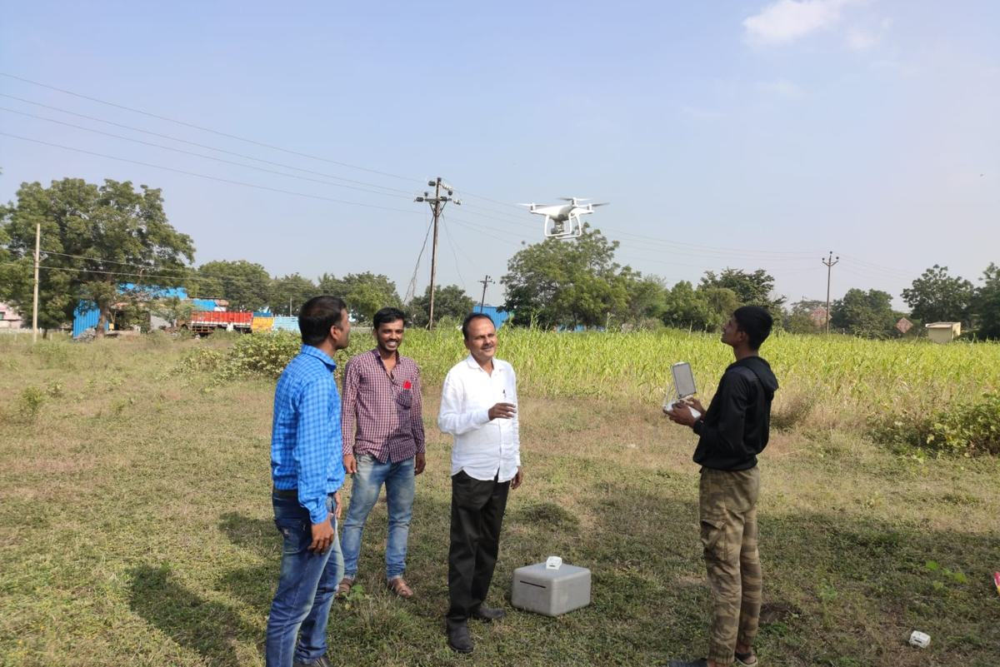
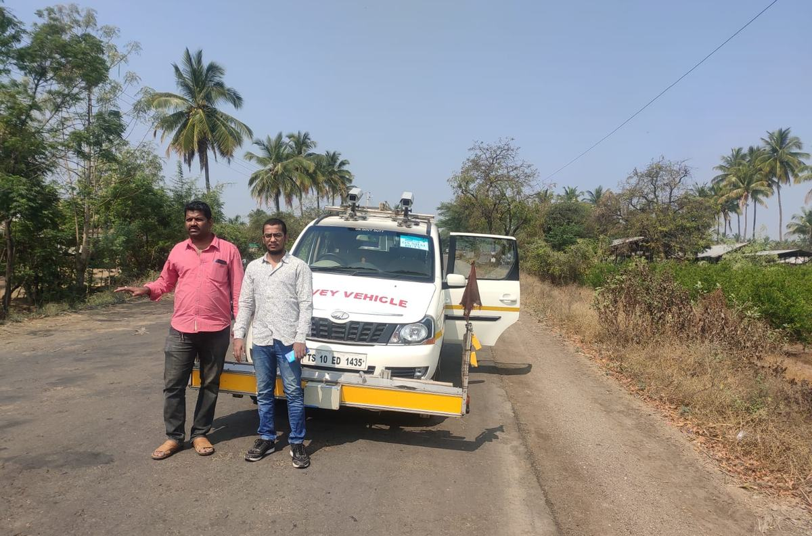
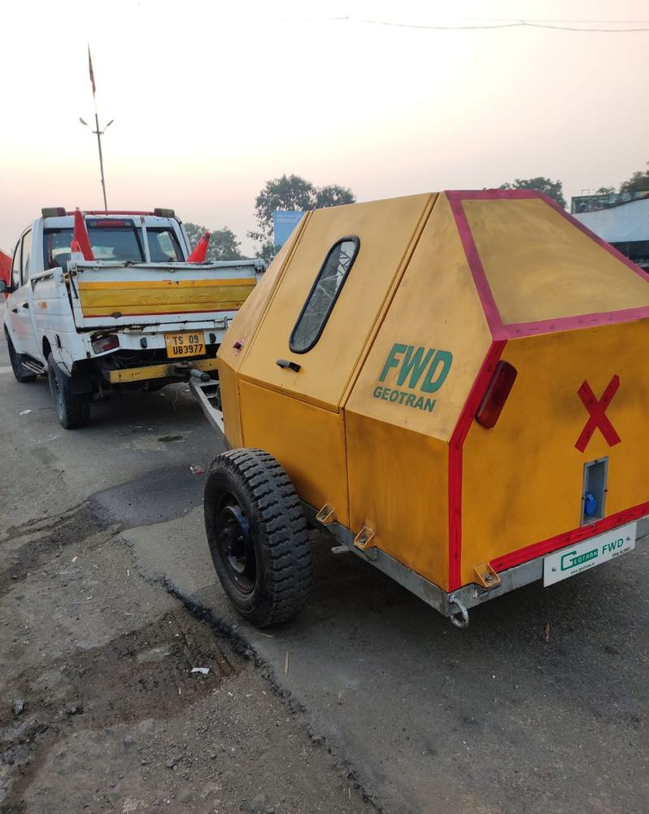
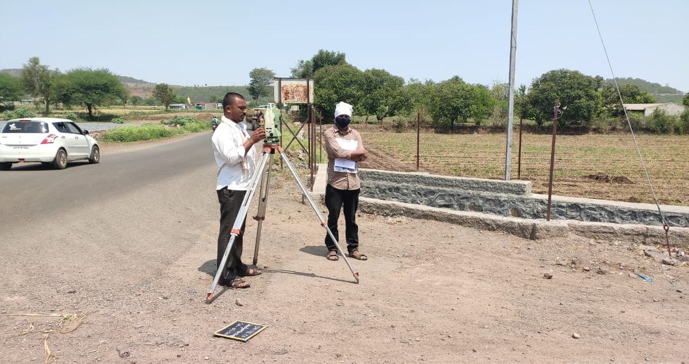
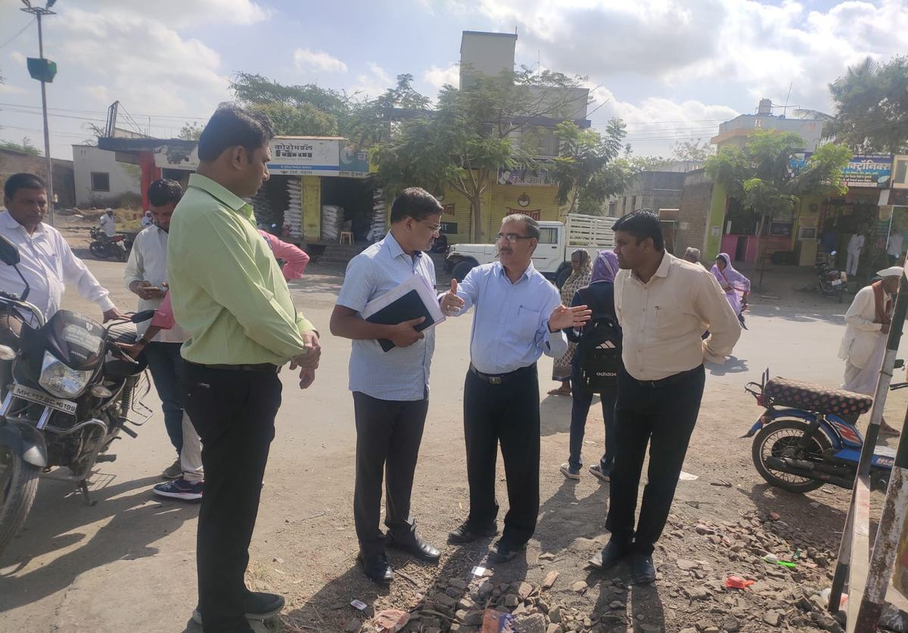
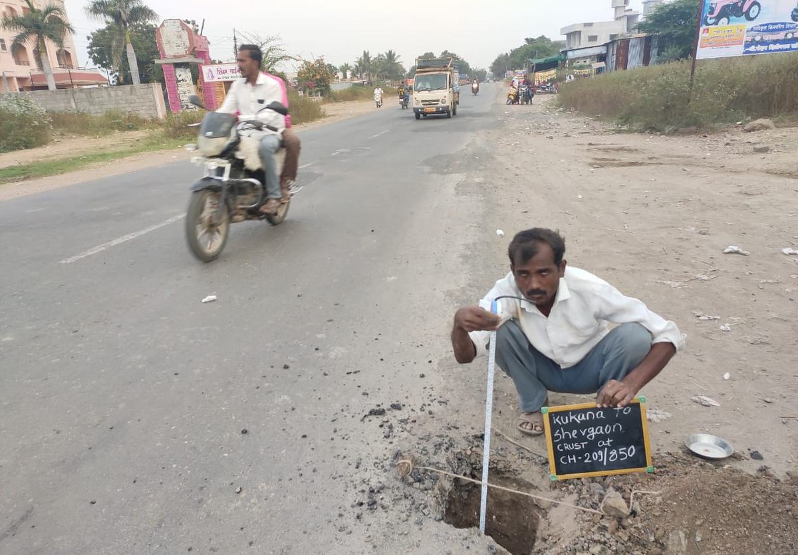

Survey & mapping
Field data that a design can rely on, for road corridors, canals and command areas, city streets, industrial plots and campuses. Drawings come in AutoCAD and Civil 3D, maps in QGIS.
- Total station & DGPS
- Double levelling & benchmarks
- Contour & block surveys
- Canal L- and cross-sections
- Demarcation & set-out
- GIS maps

Drone survey
Aerial surveys for large or congested sites, giving orthophotos and terrain models faster than ground survey alone, tied to DGPS control on the ground.
- Orthophotos
- Digital terrain models
- Corridor mapping
- Volume calculations


Road & pavement testing
Condition and structural evaluation of roads with our own testing equipment, for DPRs, overlay design, maintenance planning and contractor performance checks.
- Network survey vehicle (NSV)
- Falling weight deflectometer
- Benkelman beam
- Bump integrator
- Axle load survey
- Classified traffic counts


Geotechnical investigation & material testing
Subsurface investigation for bridges, ghats, intake works and buildings, and testing of soils and materials. Every lab result is checked against what was seen on site before it goes into a design.
- NX core drilling
- Core recovery & RQD logging
- Trial pits
- Plate load tests
- CBR & free swell index
- Geological reports

Design & DPRs
Detailed project reports and designs for roads, bridges, water supply schemes, irrigation works and municipal projects, costed on the current schedule of rates.
- Road & pavement design
- FDR, CTB & white-topping
- Bridge & culvert hydraulics
- Water supply networks
- Chak planning & PDN
- Estimates & tenders

PMC & quality control
Independent supervision for owners, from a project management unit for 171 km of FDR roads to development works for five municipal councils.
- Construction supervision
- Layer-wise QC testing
- Proof checking
- Bill certification
- PMU services

Clearances & approvals
The submissions that stand between a design and a start on site: statutory clearances, plan approvals and the technical documents departments need.
- Forest & wildlife clearance (PARIVESH)
- Town planning approvals
- Administrative approval support
- Technical sanction support
From survey to completion
Survey
Topographic survey, levels and an inventory of what is on site.
Investigate
Soil, rock and material samples, bores and lab tests.
Design & estimate
Design, drawings, quantities and estimate, revised until cleared.
Approve & tender
Support through approvals, sanction and tender papers.
Supervise
Quality control, measurements and bill certification.
Have a survey, testing or design job coming up?
Send us the scope or the tender notice and we will reply with a methodology and fee.